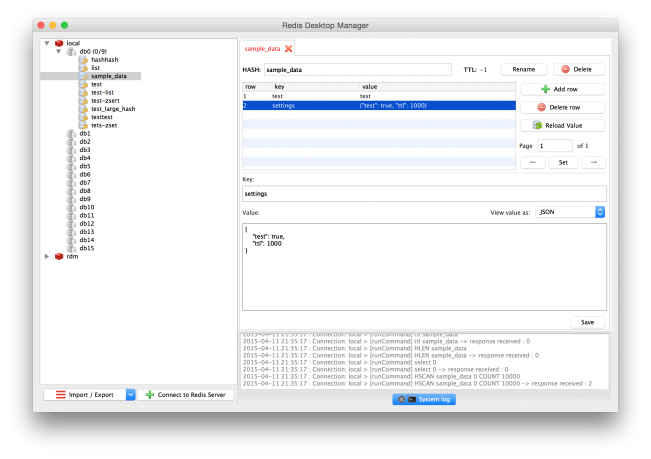

redis 可视化客户端工具
Redis是一个超精简的基于内存的键值对数据库(key-value)，一般对并发有一定要求的应用都用其储存session，乃至整个数据库。不过它公自带一个最小化的命令行式的数据库管理工具，有时侯使用起来并不方便。不过Github上面已经有了很多图形化的管理工具，而且都针对REDIS做了一些优化，如自动折叠带schema的key等。
Redis Desktop Manager
一款基于Qt5的跨平台Redis桌面管理软 件

- 支持: Windows 7+, Mac OS X 10.10+, Ubuntu 14+
- 特点： C++ 编写，响应迅速，性能好。但不支持数据库备份与恢复。
- 项目地址： https://github.com/uglide/RedisDesktopManager